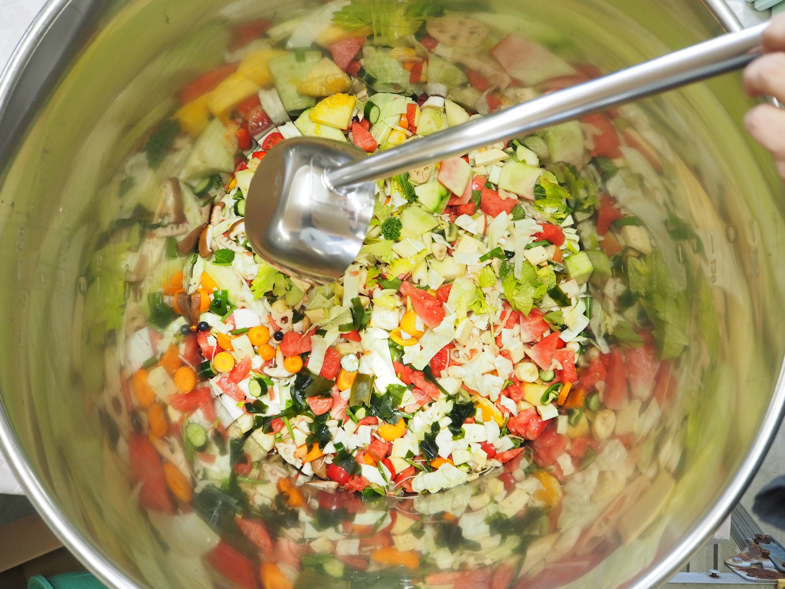

発酵素材の技術
10年熟成の複合発酵種菌や和漢の発酵抽出など、独自の発酵素材を基盤に、 消化生理に配慮した設計をご提案します。
FERMENTATION × YOUR BRAND
人・ペット向け酵素ドリンクのOEMサポート。
企画から商品化まで、一つひとつの工程を支えます。
想いを、一緒に商品のかたちへ。
小ロット・企画段階からのご相談に対応

酵素株式会社は、10年熟成の発酵種菌をはじめとする発酵素材の技術を活かし、 人・ペット向けの酵素ドリンクの商品づくりを支援しています。 本来の力が発揮されやすい環境を整えるという考え方を、 OEMサポートにも活かしています。
コンセプト設計から素材選定、処方、試作、 そして商品化まで、静かに伴走するパートナーでありたいと考えています。
Strengths
10年熟成の複合発酵種菌や和漢の発酵抽出など、独自の発酵素材を基盤に、 消化生理に配慮した設計をご提案します。
コンセプト設計、素材選定、処方、試作、パッケージのご相談まで、 商品開発の各工程を一貫してサポートします。
スモールスタートやテスト販売にも配慮した、小ロット・柔軟な設計に対応。 ブランドの規模や段階に合わせて伴走します。
Process
ご相談から商品化まで、5つのステップで進めます。各段階で丁寧に確認しながら、 無理のないスケジュールで伴走します。
ブランドの想い、ターゲット、想定する価格帯や販路などをお聞かせください。まずは方向性をご一緒に整理します。
コンセプトに沿って、素材構成と処方を設計。発酵素材の特性や栄養学的な視点を踏まえてご提案します。
試作品を作成し、風味・形状・仕様をご確認いただきます。フィードバックをもとに調整を重ねます。
仕様の確定後、製造に向けて必要な調整をサポートします。品質やロット、納期についても事前に確認します。
納品後も、リニューアルや次の商品開発など、ブランドの成長に合わせて継続的にご相談いただけます。
Categories
粉末や顆粒など、フードにかけて使える形状を中心に、発酵素材を活かした設計に対応します。
植物抽出濃縮発酵液をベースにした飲料。人・ペットそれぞれの用途に合わせて設計します。
Case Study
自社ブランド「わん酵素」をベースに、Natural18dog'sが持つ愛犬の食育・栄養に関する知見を掛け合わせ、 配合素材や形状、毎日の食事への取り入れやすさまで共同で設計しました。
LET’S CREATE TOGETHER
つくりたい商品やブランドの想いを、お聞かせください。
nojiri@kouso-inc.com